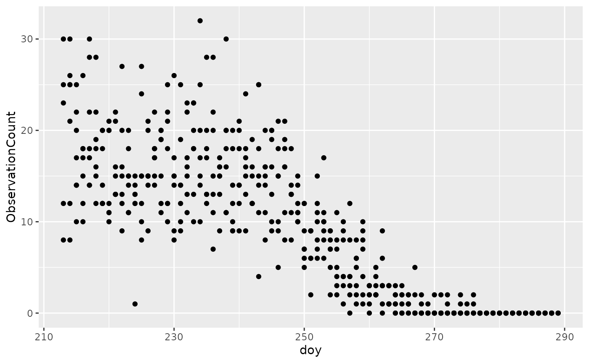
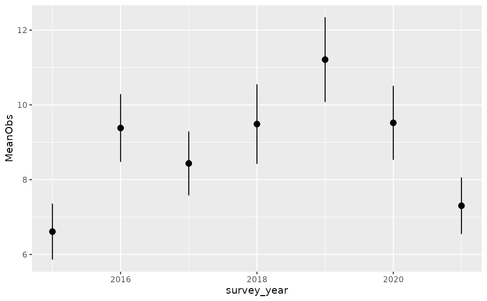

Chapter 6 - Data Visualization
2025-03-27
Source:vignettes/articles/1.6-VisualData.Rmd
1.6-VisualData.RmdData Visualization
You have successfully downloaded and summarized your NatureCounts dataset. In this chapter we will demonstrate how to do some basic visualizations with plots.
The code in this Chapter will not work unless you replace
"testuser"with your actual user name. You will be prompted to enter your password.
Plotting
Plotting your data is a powerful way to detect patterns and make
results stand out. Recall in Chapter 2 you
installed the tidyverse
package, which included ggplot2 for data visualizations.
You are encouraged to learn more about this function by reviewing Cookbook for R. We also
recommend you download a copy of the RStudio Data
Visualization cheat sheet as a reference document.
At the end of Chapter 5 you were exploring fall migration monitoring data collected at Vaseux Lake Bird Observatory, British Columbia. Let’s continue using this dataset for our plotting example and download the data for 2015-present.
First, lets apply our previously acquired skills to download the filtered dataset and zero-fill for GRCA, while also keep some extra variables.
VLBO <- nc_data_dl(collections = "CMMN-DET-VLBO", years = c(2015, NA),
username = "testuser", info = "tutorial example")## Using filters: collections (CMMN-DET-VLBO); fields_set (BMDE2.00-min); start_year (2015)## Collecting available records...## collection nrecords
## 1 CMMN-DET-VLBO 24373
## Total records: 24,373##
## Downloading records for each collection:## CMMN-DET-VLBO## Records 1 to 5000 / 24373## Records 5001 to 10000 / 24373## The server did not respond within 120s. Trying again...## Records 10001 to 15000 / 24373## Records 15001 to 20000 / 24373## Records 20001 to 24373 / 24373
GRCA <- format_zero_fill(VLBO, species = 15900,
by = "SamplingEventIdentifier",
extra_event= c("survey_year", "survey_month", "survey_day"))## - Consider summarizing multiple observations per set of 'by' before zero-filling to increase speed## - Converted 'fill' column (ObservationCount) from character to numericFirst, we are interested if there are any noticeable patterns in migration timing. For this, we will use the add date and day-of-year helper function, introduced at the end of Chapter 5, to add two new columns to the dataframe.
GRCA_dates <- format_dates(GRCA)Now we can plot raw counts (y-axis) for each day-of-year (x-axis).
ggplot(data = GRCA_dates) +
geom_point(aes(x = doy, y = ObservationCount))
What you will notice is that migration for this species is highest early in the year and diminishes with time.
Next, we are interested in visually examining the mean number of
migrant GRCA each year, to see if there are any noticeable changes over
time. First, we need to summarise the data. Here, we create a function
that calculates standard error (se) and deploy the mutate()
function which helps create new variables from existing ones:
#use this shortcut function to calculate the standard error
se <- function(x) sd(x) / sqrt(length(x))
GRCA_year <- GRCA %>%
group_by(survey_year) %>%
summarise(MeanObs = mean(ObservationCount),
SEObs = se(ObservationCount)) %>%
mutate(yrmin = MeanObs + SEObs, yrmax = MeanObs - SEObs)Now we can create the plot:
ggplot(data = GRCA_year) +
geom_pointrange(aes(x = survey_year, y = MeanObs, ymin = yrmin, ymax = yrmax))
You will notice there was an increase in the mean number of GRCA observed in the last three years, compared to 2015. You might now be wondering why.
Mapping
Resources you can use to help analyze and map your data include the NatureCounts Spatial Data Tutorial and the Mapping Observations how-to article. The materials are not repeated here. We encourage you to check this out if you are interested in mapping your data!